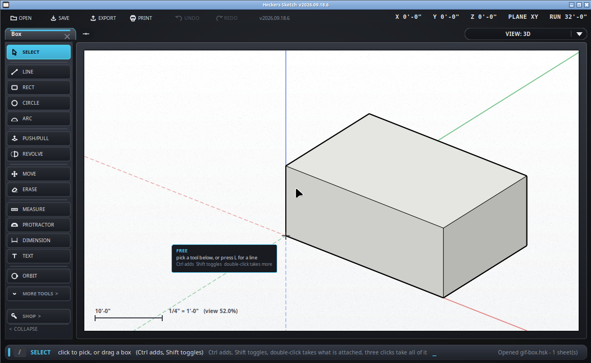

Pick what you want to work on.
Keyboard: Space - SketchUp's key for the arrow, and worth the surprise. Esc gets you here too, once it has finished backing out of whatever else was going on.

The three clicks are not three separate gestures - they are one, two and three clicks of the same click, so they have to be quick. Pause in the middle and you have picked twice rather than picked more. It is the same in SketchUp and it is worth practising on a box.
Most of the program acts on what is picked rather than on what is under
the cursor, and that is the difference between moving one edge and moving the
wall it belongs to. With something picked: M moves it,
Q turns it, Delete removes it,
/center puts it on the middle of the floor, /tozero
stands it in the corner at 0,0,0. With nothing picked those same tools work
on whatever you point at instead.
Right-click anywhere for what can be done now: turn a face over, center the selection on the origin, stand it in the corner, cut a plan from the face you clicked, put the guides away or throw them away, and Erase at the bottom under a line.
The rows are always the same rows in the same order, and the ones that would do nothing are greyed rather than missing. That is deliberate: a menu that changes shape can put Erase under a hand that was aiming at something harmless.
Blue, and along its whole length - a guide picked at one end lights up right across the paper, because that is where the guide is. The count is in the bar along the bottom.
A guide has to be right under the cursor rather than merely near it, and it goes blue-dashed rather than lighting up thickly - guides are there to draw against, not to be caught by accident. And of two edges lying close together on screen, the one in front at the spot you are pointing at wins: the rim of a knob rather than the wall underneath it.